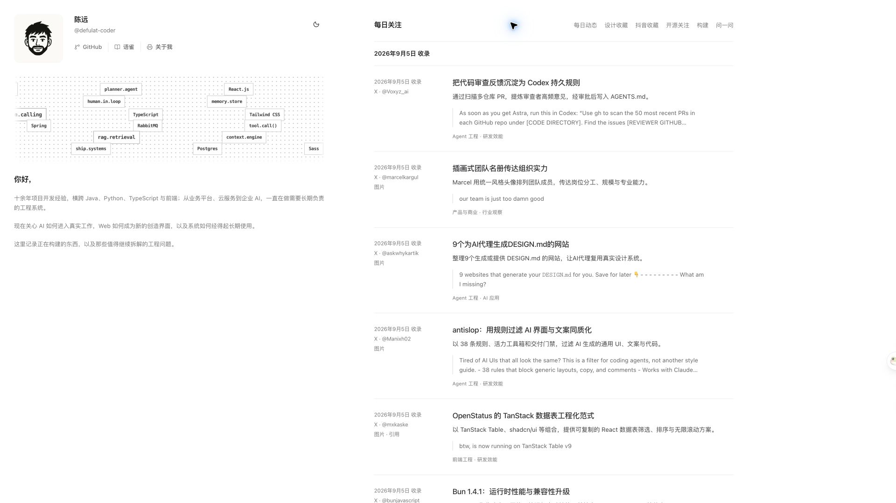

<!doctype html><meta charset="utf-8"><title>陈远 · 宣传片视觉定案</title><style>*{box-sizing:border-box}body{margin:0;background:#ededed;color:#1c1c1e;font-family:system-ui,"PingFang SC",sans-serif}section{width:1920px;height:1080px;background:white;position:relative;overflow:hidden;margin:0 0 30px} .eyebrow{font-size:36px;color:#6f6f72}h1{font-size:128px;font-weight:600;margin:20px 0;letter-spacing:0}h2{font-size:72px;font-weight:500;margin:20px 0}.center{display:flex;flex-direction:column;justify-content:center;align-items:center}.label{position:absolute;top:80px;left:96px;font-size:40px}.screen{position:absolute;left:96px;top:280px;width:1250px;border-radius:8px;box-shadow:0 30px 70px #0001}.side{position:absolute;left:1410px;top:420px;font-size:60px;line-height:1.4}p{font-size:40px;color:#6f6f72}.line{width:72px;height:3px;background:#1c1c1e}</style><section class="center"><div class="line"></div><h1>陈远</h1><p>个人工程档案</p></section><section><div class="label">把值得回看的内容留下</div><div class="side">每日<br>关注</div></section><section class="center"><span class="eyebrow">开源关注</span><h2>不止一个 Star。</h2><p>从收藏，走进项目本身。</p></section>